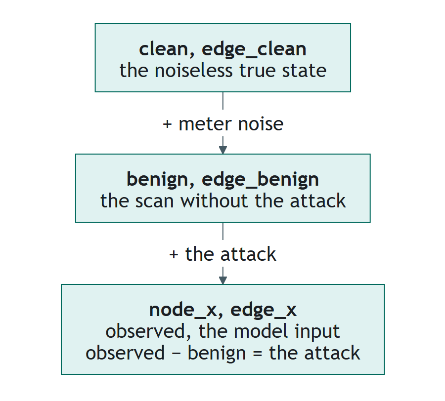

Layers and labels¶
Every frame of a timeline is stored three times: as the operator saw it, as it would have been without the attack, and as it truly was. This page explains the three layers, the labels beside them, and which of them a detector may read.
The data dictionary lists every array with its shape and columns. This page explains what they are for.
The three layers¶

| Layer | Arrays | What it is |
|---|---|---|
| observed | node_x, edge_x |
the scan with noise, and with the attack where attacked |
| benign | benign, edge_benign |
the same scan with the attack removed, the same noise |
| clean | clean, edge_clean |
the true state, with no noise and no attack |
Each layer exists for the buses and for the branches. A file with PMU currents has pmu_i and
pmu_i_benign as well.
Two differences are exact, on the metered channels.
| Difference | Is |
|---|---|
| observed minus benign | the attack |
| benign minus clean | the meter noise |
Each frame draws its noise once. The benign scan is the true readings plus that noise. The
observed scan is the benign scan plus the attack on the meters the attack moves. So
node_x - benign is the attack vector exactly, and zero outside the episode.
clean covers every bus, with no mask. edge_clean holds the true flows at the metered branch
ends. The loader also derives edge_clean_full, the true flow on every branch, from clean
when it reads the file.
What each layer is for¶
| Layer | Use |
|---|---|
| observed | the input of a detector or an estimator |
| benign | evaluation: what a meter would read if it were secured |
| clean | the target of state estimation, and evaluation |
The masks¶
Metering is sparse: not every bus has a voltmeter and not every branch has a flow meter.
node_m and edge_m are 1 where a meter exists and 0 where none does. A reading with no meter
is stored as zero, so read the mask to tell a missing reading from a true zero. The masks are
the same on every frame (Meters and noise).
The labels¶
| Label | Shape | Meaning |
|---|---|---|
y |
[N] per frame |
1 at each attacked bus |
family |
one per frame | which attack; 0 is benign |
stealthy |
one per frame | 1 for a family that is a local false state |
seq_id |
one per frame | the episode's row; -1 is benign |
| tamper masks | as the readings | 1 at each meter the attack changed |
ds.episodes |
one row per episode | onset, length, family, buses |
y answers "which buses". family answers "which attack". There is one family per frame
because episodes never overlap. The attack families says what each family is and
what a 1 in a tamper mask means.
Two more columns place a frame: split (0 train, 1 validation, 2 test) and timestep, the
frame's row in the file.
The temporal features¶
A file also stores two features computed from the observed frames alone (formulas/temporal.py,
written by TimelineWriter.write_temporal_layers).
| Feature | Definition |
|---|---|
temporal_delta |
the change of P_inj and Q_inj from the frame before; zero on frame 0 |
swing |
temporal_delta divided by the bus's recent-change scale |
The scale is the standard deviation of the bus's absolute scan-to-scan change over the 60
scans before the frame (SWING_WINDOW_SCANS), plus 0.001. A sudden jump reads as a large swing at its first frame. The
slow ramp At changes by less than the typical recent change on every frame, so its swing stays
near the benign level.
ClientView.temporal() is a third: it computes each client's change from its own readings when
a file is read as clients.
Which layers a feature may read¶
At test time a feature may use only measurements and quantities derived from them.
- Measurements:
node_x,edge_x,pmu_i, the masks,temporal_delta,swing, and the previous frame's readings and row (prev_node_x,prev_edge_x,prev_swing,prev_timestep). - Not inputs:
cleanandbenign. They exist for evaluation and for fitting. - Labels:
y,family,stealthy,seq_id, the tamper masks and the magnitudes.
What each analysis class reads:
| Class | Reads | Role |
|---|---|---|
SEBase.estimate |
node_x, edge_x |
measurements |
SEBase.fit(calibrate="truth") |
measurements, family, clean |
fitting: the meter error scales at the true state |
SEBase.fit(calibrate="measured") |
measurements, family |
fitting from accuracy classes |
SEBase.score |
measurements, then family, clean |
evaluation against the truth |
JacobianFeatures, JacobianWeighting |
node_x, edge_x, prev_node_x, prev_edge_x, prev_timestep |
measurements |
SwingThreshold, DeltaThreshold |
swing, temporal_delta |
measurements |
ResidualLocalizer |
node_x, edge_x |
measurements |
BusCNN, BusMLP, FedBusCNN, FedBusMLP |
what the feature set names (below); y as the training label |
measurements |
GatedPrior(GateConfig(gate="oracle")) |
y |
an evaluation ceiling only |
TrustSelector.fit |
measurements, family |
measurements |
TrustSelector.score |
benign, edge_benign |
evaluation |
trust.secured.secured_copy |
benign, the tamper masks |
writes a copy in which chosen meters read benign |
A learned localizer reads node_x, node_m, edge_x and y. A feature set with full14
adds temporal_delta and swing, one with prev adds prev_swing, and one with jac adds
the previous frame's readings and prev_timestep.
secured_copy also rewrites the tamper masks and the two stored temporal features of its copy.
The state estimators default to calibrate="truth". ResidualLocalizer, the Jacobian features
and TrustSelector fit their estimator with calibrate="measured". So a detector never reads
the clean layer.
The groups of a file¶
A timeline is one HDF5 file. Its group, dataset and attribute names are defined once, in
src/fdia_graph/schema.py.
| Group | Holds |
|---|---|
data/ |
the observed layers, the masks, the labels and the per-frame columns |
benign/ |
the benign layers |
clean/ |
the clean layers |
attack/ |
the tamper masks and the designed magnitudes |
episodes/ |
one row per episode |
graph/ |
the static graph: the branches and what gives the admittance matrix |
| attributes | what identifies the file, and the settings it was generated with |
The frames are chunked along time, so a window of consecutive frames is one read. The data dictionary lists the datasets of each group.
One layout¶
One writer writes every timeline, in one layout: flows at the from end of a branch [E, 2], PMU
currents as real and imaginary part, and both temporal features. A file that declares another
layout in its attributes (flows at both branch ends in edge_feat, or a current_form other than
rectangular) was written elsewhere. It is refused with NotATimeline when it is opened, so no
column of it is read as something else.
A New York file has the form of an IEEE file. Its injections are positive for load, like an IEEE file's, and it holds the solved frames of its pool only.
Some datasets are in a file only when the source was given what they hold:
| Where | Dataset or attribute | Holds | Written when |
|---|---|---|---|
data/ |
time |
each frame's time, int64 seconds | the pool has times (a New York pool), or time= is passed |
graph/ |
bus_client |
the client that owns each bus; -1 for none | the source has own= |
| attributes | client_names |
the clients' names, in the order bus_client indexes |
the source has own= |
Generate a timeline says what time= takes, and
its section on clients what own= does.
The unit table, the bus names and the bus coordinates of the New York case are not in a file. They are the case file's (Test systems).
The attributes record the settings as JSON (settings) with their hash (settings_hash).